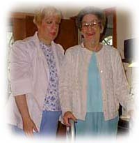

|  |
|
"The training course I attended at Utopia to become a Certified Home Health Aide has changed my life for the better. A special thanks to the trainers Barbara and Denise for their excellent instruction. Your company is fortunate to have such fine teachers. I am now able to help people and make a difference. Thank You." |
J.K. |
Career Opportunities in New York
- Job Descriptions
- Free Training to become a certified Home Health Aide or Personal Care Aide
- Benefits for Utopia's Aides
- Free Training Class Schedule (New York City / Long Island)
- Apply Online
Registered Nurse - RN
The registered professional nurse provides skilled nursing care and teaches and supervises the family and other members of the nursing team.
These services are performed in accordance with the
physician's orders, under the supervision and instruction of the R.N. Field Supervisor and the Director of Patient Services.
Licensed Practical Nurse - LPN
The licensed practical nurse provides skilled nursing care and teaching to patients and families. These services are performed in accordance with
the physician's orders, under the supervision and
instruction of the R.N. Field Supervisor and the Director of Patient Services.
Home Health Aide - HHA
The Home Health Aide is a para professional employee trained to provide personal care and related services, functioning under the direction of the
branch administrator and supervision and instruction
of the R.N. Field Supervisor and Director of Patient Services. Tasks include:
- taking vital signs - blood pressure, temperature, pulse, etc.
- performing range of motion exercises.
- applying dressings to a stable wound.
- preparing meals for patients requiring a special diet, e.g. for a diabetic.
Personal Care Aide - PCA
The Personal Care Aide is a para-professional employee trained to provide personal care and related services, functioning under the direction of the
branch administrator and the supervision and
instruction of the R.N. Field Supervisor and Director of Patient Services.
Live-in Aide
The Live-in Aide is a para-professional employee who remains in the patient's home on a 24 hour basis and is trained to provide personal care and related
services, functioning under the direction of
the branch administrator and the supervision and instruction of the R.N. Field Supervisor and Director of Patient Services.
Homemaker/Companion
The Homemaker is a para-professional employee who provides chores and offers companionship in the home. They function under the direction of the branch
administrator and the supervision and
instruction of the R.N. Field Supervisor and Director of Patient Services.
Free Training to become a Certified Home Health Aide or a Personal Care Aide
An excellent and extensive free training program is offered at all Long Island locations and in our Queens office in NYC. Classes are generally from 9 am to 5 pm. The Personal Care Aide program is for one week, the Home Health Aide program is for two weeks.
Free upgrades of Personal Care Aides to Home Health Aides, as well as transition of Certified Nurses Aides to Home Health Aides are performed regularly on Long Island and in NYC.
To ensure our aides and nurses meet our superior standards, Utopia provides continuing education in-service classes throughout the year at all our locations. A variety of topics are offered that are relevant to the patient population that we serve. The in-services are given by RN's and guest speakers who are specialized in specific areas.
Advancement opportunities to become a field staff aide or HHA/Personnel Specialist are available.
Free Home Health Aide (HAA) and Personal Care Aide (PCA) Training Classes in NY City
1/16/06 thru 1/31/06 - Queens
2/13/06 thru 3/01/06 - Queens
3/13/06 thru 3/28/06 - Queens
4/10/06 thru 4/25/06 - Queens
5/08/06 thru 5/23/06 - Queens
6/12/06 thru 6/27/06 - Queens
Free Home Health Aide (HAA) and Personal Care Aide (PCA) Training Classes on Long Island
1/09/06 thru 1/24/06 - Riverhead
2/06/06 thru 2/22/06 - Babylon
2/06/06 thru 2/22/06 - Rockville Centre
3/06/06 thru 3/21/06 - Patchogue
3/06/06 thru 3/21/06 - Westbury
4/03/06 thru 4/18/06 - Kings Park
4/03/06 thru 4/18/06 - Rockville Centre
5/01/06 thru 5/16/06 - Riverhead
5/01/06 thru 5/16/06 - Westbury
6/05/06 thru 6/20/06 - Babylon
6/05/06 thru 6/20/06 - Rockville Centre
Phone Numbers
Kings Park - (631) 544-0462
Riverhead - (631) 369-5500
Patchogue - (631) 654-9006
Babylon - (631) 587-8090
Westbury - (516) 334-4807
Rockville Centre - (516) 764-3100
Queens (Elmhurst) - (718) 429-5221
- Competitive pay rates
- Full time & part time hours
- Flexible hours
- Paid vacation
- Paid in-service
- Extra weekend pay
- Extra holiday pay
- Free Scrub Top
- 401k Plan
- Medical Plan available at discounted group rate
- $500 monthly raffle
- $100 bonus for each referral of a friend or relative to work for Utopia
- Employee of the Month Award in each office
- Free subscription to the award-winning Home Health Aide Digest, 6 times per year, for all aides
You can fill out a short form to inquire about positions at your local branch office. Click here for the New York application.
Utopia Home Care's HIPAA Notice of Privacy Practices